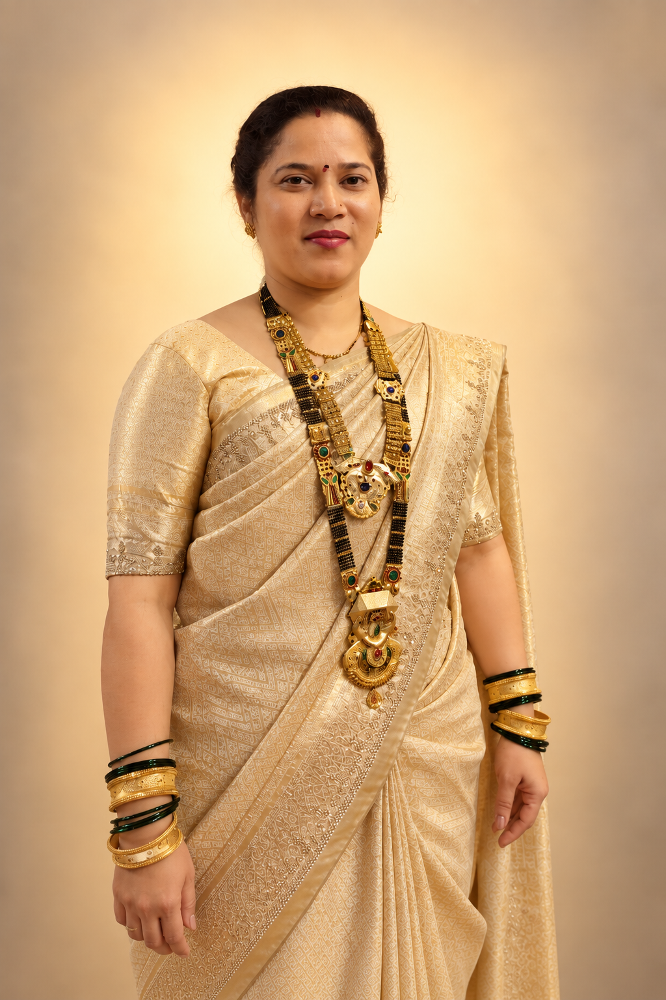
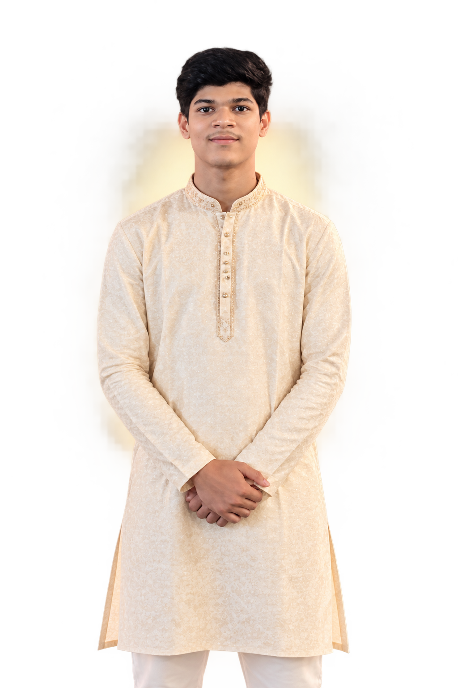

Ganpati Arrival • गणपती आगमन
१४ सप्टेंबर
१०:०० AM
प्रेम, प्रार्थना आणि भक्तीभावाने आपण बाप्पांचे आपल्या घरी स्वागत करूया.
WITH LOVE & DEVOTION
मनात भक्ती आणि आनंद भरून, Patil Parivar आपल्या लाडक्या गणपती बाप्पांच्या आगमनाचा उत्सव साजरा करण्यासाठी आपले मनःपूर्वक स्वागत करीत आहे.
View Celebration →
THE CELEBRATION • उत्सव सोहळा
गणपती बाप्पांचे स्वागत, भक्ती, आनंद आणि आपुलकीने एकत्र येऊन Ganesh Chaturthi चा पवित्र उत्सव साजरा करूया.
Ganpati Arrival • गणपती आगमन
प्रेम, प्रार्थना आणि भक्तीभावाने आपण बाप्पांचे आपल्या घरी स्वागत करूया.
Visarjan • गणपती विसर्जन
मनात बाप्पांचे आशीर्वाद घेऊन प्रेमाने त्यांना निरोप देण्यासाठी आपली उपस्थिती लाभू द्या.
UNTIL BAPPA'S ARRIVAL • बाप्पांच्या आगमनाला उरलेला वेळ
PATIL PARIVAR
Family, श्रद्धा आणि एकोप्यामुळे हा उत्सव अधिक खास बनतो.



A HEARTFELT INVITATION • मनःपूर्वक आमंत्रण
पाटील परिवारासोबत Ganesh Chaturthi चा पवित्र उत्सव साजरा करण्यासाठी आणि बाप्पांचे आशीर्वाद घेण्यासाठी आपण आवर्जून उपस्थित राहावे.
॥ गणपति बाप्पा मोरया ॥
॥ मंगलमूर्ति मोरया ॥
CELEBRATION VENUE • उत्सवाचे स्थळ
Near Kunkai Gavdevi Mandir, Vitaw, Koliwada,
Post Kalwa, Thane 400605